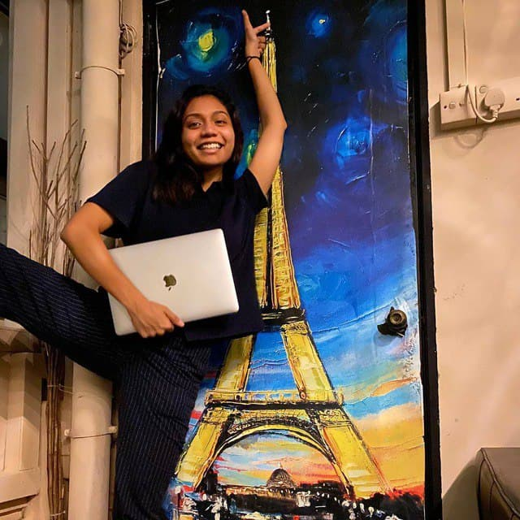
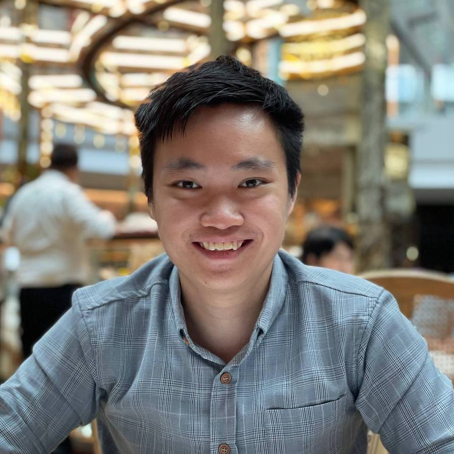

Esther Chong
Esther is a Senior at SMU, studying Accountancy and Politics, Law, Economics. She is always looking for new ways to drive impact, any where in the world!

Fara Natasha
Fara is a Senior at SMU, pursuing Politics, Law, Economics, and Finance. She is an aspiring game developer and UI/UX designer, looking to leverage fun to educate the public about social issues.

Gabriel Ang
Gabriel is an Associate at Boston Consulting Group, and previously studied Economics at SMU. He is passionate about the arts and is always looking to support local!
Sammie Lim
Sammie is a Consultant at Oliver Wyman, and previously studied Economics and Business at SMU. She is a dreamer, who is always thinking about how we can do more and do better, even in her dreams.